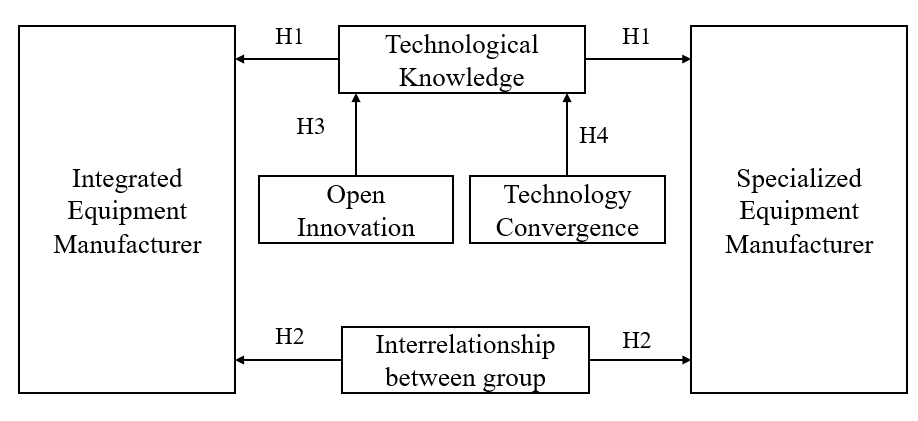

4차 산업혁명 시대에 반도체 품질에 대한 고객의 요구가 높아지면서 반도체 장비의 중요성도 커지고 있다. 그러나 지금까지 반도체 장비 연구는 경영관리적 사례연구가 주를 이뤄 기술·혁신 관점의 연구는 매우 미흡했다. 본 연구는 "반도체 장비 기업의 유형별 혁신 속성 및 기술지식 영향력 요인은 무엇인가?"라는 질문에 천착하여, 6개 반도체 전공정 장비 기업을 종합장비기업군과 단일장비기업군으로 나눈 뒤 20년간 등록된 특허를 정량 분석했다.
- 4차 산업혁명 시대에 반도체 품질에 대한 요구가 높아지며 반도체 장비의 중요성이 커지고 있으나, 기존 연구는 경영관리적 사례연구가 주를 이뤄 기술·혁신 관점의 연구가 미흡했다.
- 본 연구는 6개 반도체 전공정 장비 기업을 종합장비기업군과 단일장비기업군으로 나누어, 전문공급자형 산업이자 복합제품시스템으로 분류되는 반도체 장비의 특성에 기반해 20년간 등록된 특허를 분석했다.
- 종합장비기업군은 단일장비기업군에 비해 기술지식 연계성이 높고, 단일장비기업군은 종합장비기업군에 비해 기술지식 영향력이 높음을 확인했다.
- 두 기업군 모두 기술지식 영향력에 대해 개방형 혁신은 부정적, 기술 융합은 긍정적 영향을 미친다.
- 본 연구는 반도체 장비 산업에 대한 이해를 넓혀 기업의 전략 수립에 새로운 시각을 제공했다는 데 의의가 있다.
1. 서론
자율주행차, 사물인터넷(IoT), 메타버스로 대표되는 4차 산업혁명의 핵심 기술은 반도체와 불가분의 관계에 있으며, 반도체는 군사적 경쟁력과 국가·국제 안보에도 중대한 영향을 미친다. 반도체 산업은 반도체 소자 제작을 위한 장비 기업(OEM)의 고도화된 기술지식이 필수적인 장비집약적 산업이다. 아무리 뛰어난 설계를 해도 그대로 웨이퍼를 가공할 장비가 없으면 소자 생산이 불가능하다. 이를 방증하는 것이 2022년 10월 미국의 대중국 첨단 반도체 장비 수출 규제로, 전문가들은 높은 기술지식을 갖춘 기업의 장비를 수급받지 못하는 이 규제가 중국의 반도체 기술 하락으로 이어질 것으로 예측한다. 장비 기업의 기술지식은 고객인 종합반도체기업(IDM)·위탁생산기업(Foundry)의 소자 품질과 직결되므로, 반도체 산업의 발전을 위해서는 먼저 장비 기업의 기술지식 유형과 속성을 살펴볼 필요가 있다.
2. 이론적 배경
2.1 반도체 장비 기술
반도체 소자의 성능은 집적도와 종횡비로 결정되며, 고성능 소자 생산에는 높은 난이도의 노광(Lithography)·식각(Etching)·증착(Deposition) 장비 기술지식이 요구된다. 노광 장비는 짧은 파장의 광원으로 해상도를 높이는 방향으로 발전해 극자외선(EUV) 장비에 이르렀고, 식각 장비는 극저온 식각(Cryogenic Etch)으로 건식 식각의 한계를 넘고 있으며, 증착 장비는 원자 단위로 증착하는 ALD(Atomic Layer Deposition) 장비가 양산에 적용되고 있다.
2.2 반도체 장비 기술혁신 속성
Pavitt(1984)의 기술혁신 유형 분류에 따르면 반도체 장비 산업은 가격보다 제품 성능에 민감한 전문공급자형(Specialized Suppliers) 산업에 속해, 가격 인하보다 장비 성능을 높이는 기술지식에 집중해왔다. 또한 반도체 장비는 대량생산제품(MPG)과 구별되는 복합제품시스템(CoPS)으로 분류된다. 여기서 '복합'은 부품·서브시스템이 다양한 기술적 기반을 가짐을, '시스템'은 이들을 통합·상호작용하게 만드는 것이 중요함을 뜻한다. 복합제품시스템으로서 반도체 장비는 두 가지 특징을 지닌다. 첫째, 다양한 기술 기반을 위해 내·외부 혁신 참여자와 협업하는 개방형 혁신을 적극 도모한다. 둘째, 개방형 혁신으로 얻은 외부 기술을 내부 기술과 하나의 시스템으로 통합하는 기술 융합이 필요하다. 노광 장비 기업 ASML이 외부에서 공급받은 광원·렌즈를 노광 장비라는 융합 시스템으로 만드는 것이 대표적 사례다.
2.3 반도체 장비 기업 유형
반도체 장비는 전공정(FEOL)용과 후공정(BEOL)용으로 나뉘며, 소자 전체 성능에 미치는 영향이 큰 전공정 장비의 중요도가 높고 진입 장벽도 높아 소수의 글로벌 기업이 시장을 과점한다. 전공정 장비 기업은 다시 2종류 이상의 공정 장비를 제조하는 종합장비기업군(Applied Materials·Lam Research·Tokyo Electron)과, 단일 공정 장비만 특화 제조하는 단일장비기업군(ASML은 노광, ASM은 증착, KLA는 측정)으로 구분된다.
3. 연구가설 및 연구방법
본 연구는 반도체 장비의 세 가지 특성(전문공급자형·개방형 혁신·기술 융합)에 기반해 네 가지 가설을 설정했다. H1 종합장비기업군의 기술지식 연계성이 단일장비기업군보다 높다. H2 단일장비기업군의 기술지식 영향력이 종합장비기업군보다 높다. H3 개방형 혁신은 두 기업군의 기술지식 영향력에 긍정적 영향을 미친다. H4 기술 융합의 정도는 두 기업군의 기술지식 영향력에 긍정적 영향을 미친다.

분석 데이터는 2020년 매출 상위 기업 중 종합장비기업군 3개사와 단일장비기업군 3개사가 2000~2019년 20년간 출원한 미국 특허 54,477건 중 등록된 28,366건이다. 변수는 다음과 같이 조작화했다. 개방형 혁신은 특허 공동 출원(출원인 2명 이상) 여부로 판단하는 더미 변수로, 기술 융합은 특허에 부여된 서로 다른 IPC 코드의 개수로 측정했다. 이때 IPC 코드를 서브클래스(4자리)까지만 보면 세부 정보가 왜곡되므로(모든 특허가 H01L로 분류됨), 메인 그룹·서브그룹까지 포함한 IPC 코드를 사용했다. 기술지식 영향력은 특허 피인용수를, 기술지식 연계성은 기업군 내 중첩 특허 수에 기초한 지수(0=연계 없음, 1에 가까울수록 높음)로 측정했다.
4. 연구결과
4.1 기업 유형별 기술지식 연계성 (H1 지지)
종합장비기업군은 같은 종류의 장비를 함께 생산하기 때문에 장비 개발에 필요한 기술지식이 서로 중첩된다. 그룹 간 종합 결과, 종합장비기업군의 기술지식 연계성은 0.73으로 단일장비기업군의 0.37보다 약 2배 높아 가설 H1을 지지했다. 종합장비기업군의 상위 중첩 IPC 코드는 증착 장비(C23C-016/00), 식각 장비(H01L-021/302), 반도체 전체 장비(H01L-021/00), 플라즈마 관련(H01J-037/32)으로, 다양한 장비용 특허가 각 회사에 고르게 분포했다.
| 구분 | 기업 | 중첩 특허 | 전체 특허 | 연계성 |
|---|---|---|---|---|
| 종합장비 기업군 | Applied Materials | 5,963 | 9,027 | - |
| Lam Research | 2,483 | 2,986 | - | |
| Tokyo Electron | 5,638 | 7,345 | - | |
| 합계 | 14,084 | 19,358 | 0.73 | |
| 단일장비 기업군 | KLA | 1,043 | 2,472 | - |
| ASML | 1,961 | 4,653 | - | |
| ASM | 319 | 1,883 | - | |
| 합계 | 3,323 | 9,008 | 0.37 |
4.2 기업 유형별 기술지식 영향력 (H2 지지)
단일장비기업군은 각자 자신의 장비 분야에서 높은 시장 점유율을 기록한다. ASML은 노광 장비 시장을 90%까지 장악해 독점 체제를 구축했고, KLA는 측정 장비 시장의 58%(결함 분석 파일 포맷명 KLARF가 KLA의 이름을 딴 것일 정도), ASM은 품질 요구가 가장 까다로운 ALD 장비 분야에서 52%의 점유율을 달성했다. t-test 결과 단일장비기업군의 평균 피인용수는 30.62로 종합장비기업군의 23.91보다 높아(차이 6.71, t=8.4376) 가설 H2를 지지했다. 단일장비기업군이 높은 시장점유율을 확보한 배경은 다른 요인보다 한 가지 장비에 대한 집중적인 기술지식 축적에 있음을 보여준다.
4.3 개방형 혁신과 기술 융합의 영향 (H3 기각, H4 지지)
종속변수인 피인용수가 과대산포(분산 > 평균) 특성을 보여 포아송 회귀 대신 음이항 회귀분석을 채택했다. 분석 결과, 개방형 혁신을 나타내는 변수(OpenInnovation)의 계수는 두 기업군 모두에서 음의 상관관계를 보여, 개방형 혁신이 기술지식 영향력에 긍정적 영향을 미친다는 가설 H3을 지지하지 않았다(종합 -0.479, 단일 -0.728, 모두 p<0.01). 반면 기술 융합을 나타내는 변수(Convergence)의 계수는 두 기업군 모두 양의 상관관계를 보여 가설 H4를 지지했다.
| 변수 | 종합장비기업군 계수 | 단일장비기업군 계수 |
|---|---|---|
| OpenInnovation (개방형 혁신) | -0.4795*** | -0.7280*** |
| Convergence (기술 융합) | 0.0331*** | 0.0318*** |
| LapsedYear (경과 연수) | 0.1232*** | 0.1244*** |
5. 결론
- 유형별 상반된 강점: 20년간 등록 특허 28,366건 분석 결과, 종합장비기업군은 기술지식 연계성이 높고(중첩된 지식 기반), 단일장비기업군은 기술지식 영향력이 높다(집중된 지식 축적). 특히 단일장비기업군의 높은 시장점유율은 한 가지 장비에 대한 집중적 기술지식 축적에서 비롯된다.
- 기술 융합의 긍정적 효과: 두 기업군 모두 기술 융합의 빈도가 높을수록 기술지식 영향력이 커진다. 복합제품시스템으로서 반도체 장비의 기술지식 고도화에 기술 융합이 조절 요인으로 작동한다.
- 개방형 혁신의 의외의 결과: 협업(공동 출원)에 기반한 개방형 혁신은 두 기업군 모두에서 기술지식 영향력에 부정적 영향을 미쳐, 예상과 달리 가설을 지지하지 않았다. 이 결과는 추가 연구가 필요한 부분이다.
- 연구의 의의와 한계: 정성적 사례연구에 머물던 반도체 장비 연구를 20년 누적 특허의 정량 분석으로 확장해 기업 전략·정부 정책 수립에 참고할 객관적 결과를 제시했다. 다만 분석을 특허로 한정해 재무 성과와의 관계를 도출하지 못했고, 장비 기업이 영업비밀·노하우 등 문서화하지 않는 정보로 전유성을 강화하는 경우가 많아 공개 정보만으로는 한계가 있다.